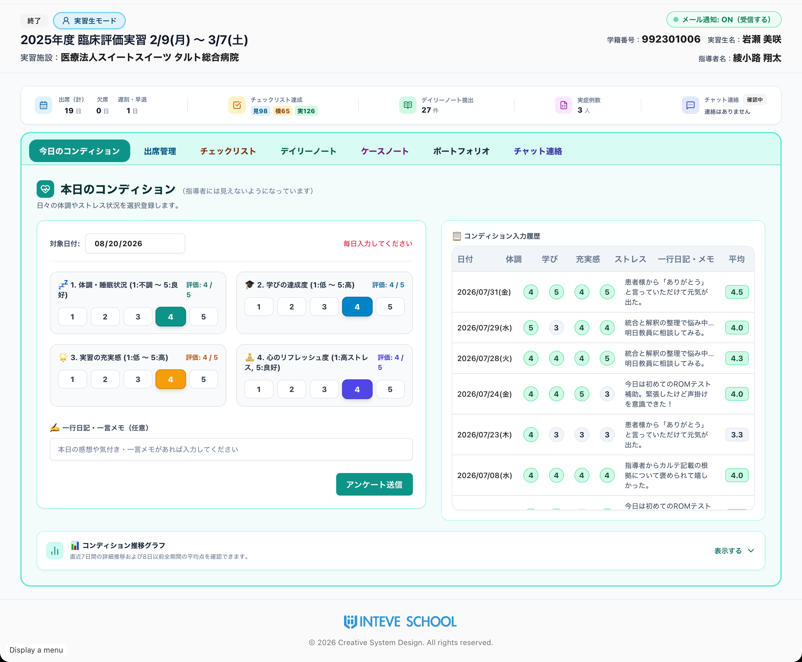
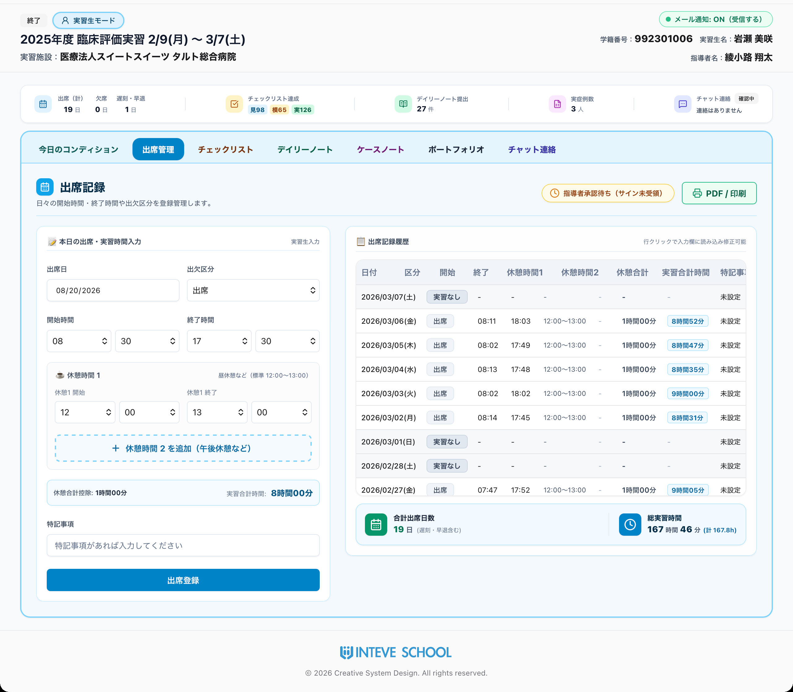
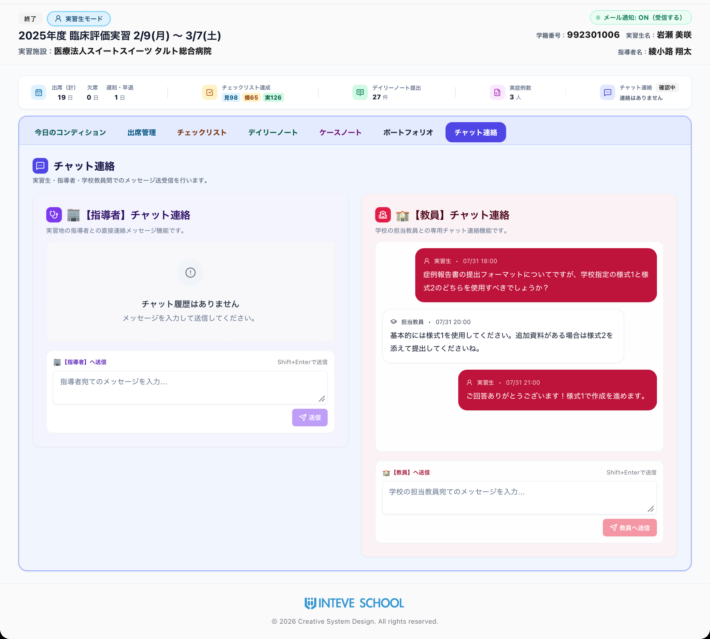
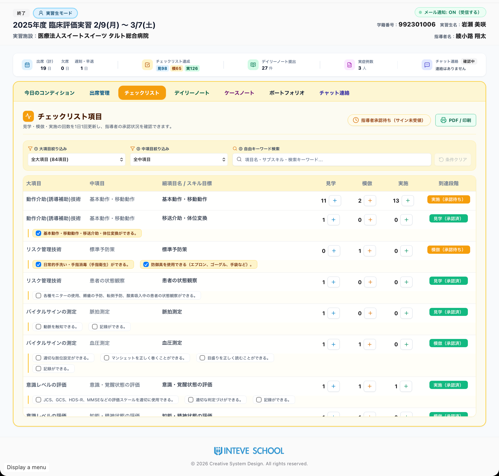
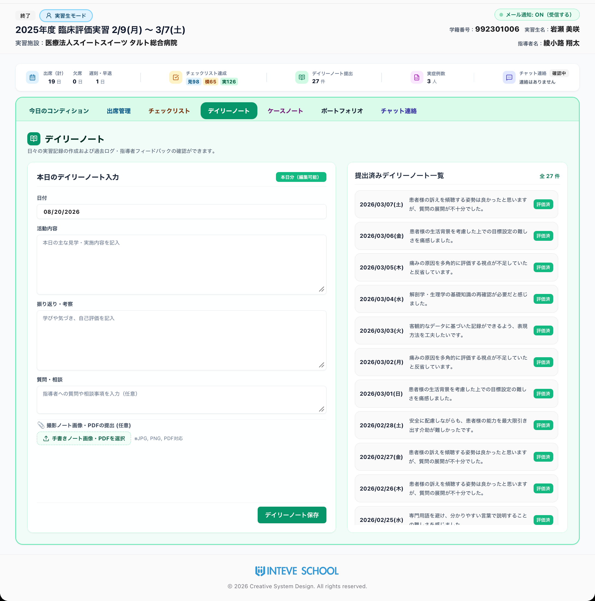
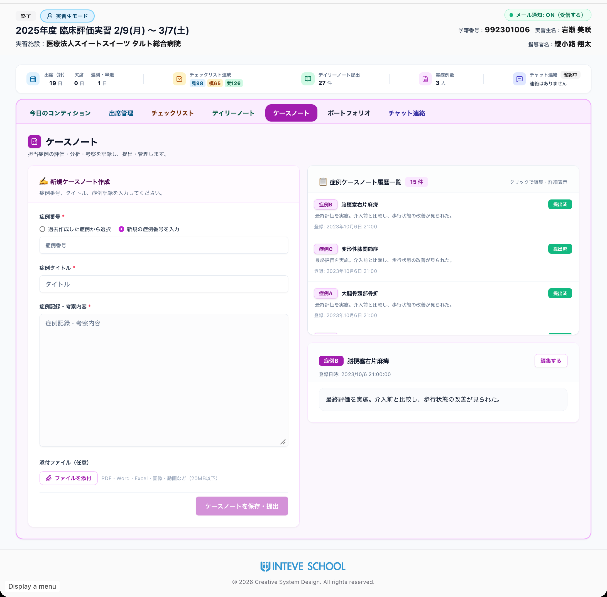
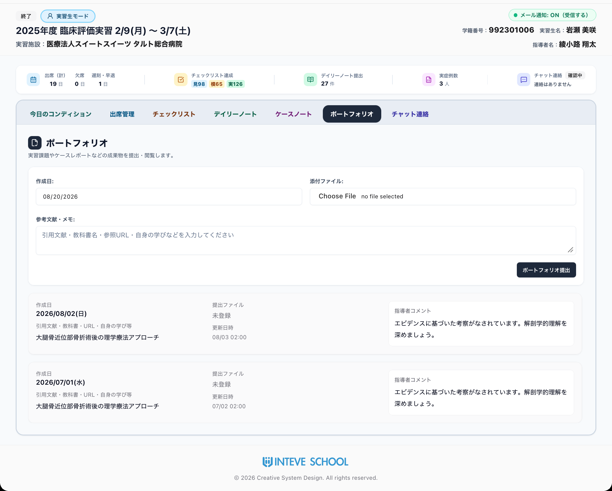

INTEVE SCHOOL シリーズ ｜ by Creative System Design
実習生・臨床指導者・教員をリアルタイムでつなぐ。
臨床実習中の「不安」と「事務負担」をゼロにするWebポータル。
INTEVE LINK（インティーヴ・リンク）は、実習生・臨床指導者・学校教員の三者をリアルタイムでつなぐ臨床実習管理システムです。直感的に誰でも使えるUI（操作画面）を追求し、体調管理から出席記録、チェックリスト、デイリーノート、ポートフォリオ、チャット連絡までをワンストップでデジタル化します。

三者リアルタイム同時アクセス
学外の実習生、病院現場の指導者、学内の教員がPC・スマホ・iPadから同じデータを共有。電話・郵送のタイムラグを完全解消。
学生の本音を守る安全領域
コンディション記録は「指導者には非公開（教員のみ閲覧）」。評価を気にせず本音を吐露でき、メンタル異変やSOSを即座に察知。
Web手書きサイン＆公的書類化
実習時間の自動集計から最終日の画面上電子サインまでWeb完結。学校提出用の正式帳票PDFが1クリックで即時発行されます。
 ｜
臨床実習マネジメントWebポータル「INTEVE LINK」
｜
臨床実習マネジメントWebポータル「INTEVE LINK」
毎日の実習状況をリアルタイム把握。学生のSOSを見逃さない 「安心の安全領域」
日々の体調変化、毎日の出欠・実習時間、指導者や教員とのダイレクトな相談まで。紙の日誌や電話連絡に頼らない、スピーディーで安心な日常コミュニケーションを実現します。
コンディション（メンタル・体調の早期発見）
実習生の日々の身体的・精神的状態を定量的・定性的に記録し、教員が遠隔から変化を察知するためのモジュールです。

出席管理 ＆ 指導者Web手書き電子サイン
日々の出欠・実習時間を正確に記録し、実習最終日の電子サインによって学校提出用の公的書類を完成させるモジュールです。

チャット連絡（指導者・教員とスピーディー連携）
メールよりもフランクかつ迅速にメッセージを送受信し、実習中の些細な疑問や相談を早期解決するためのモジュールです。

手書き派もWeb入力派も柔軟対応。臨床思考を深める 「双方向フィードバック」
見学・模倣・実施の到達度評価、手書き日誌のスマホ写真提出＆赤入れ添削、症例分析、自発的なポートフォリオ蓄積まで。現場の実態に即した柔軟な教育DXを推進します。
チェックリスト（評価項目の経験をリアルタイム集計）
学校独自のカリキュラム（見学・模倣・実施）の到達度をリアルタイムに記録・承認・集計するためのモジュールです。

デイリーノート（日々の学びと赤入れ返送のDX）
日々の活動内容・自己考察・質問事項を記録し、指導者からのフィードバックを双方向で行うモジュールです。

ケースノート ＆ 自主学習ポートフォリオ
担当患者の評価・分析を指導者と深める「ケースノート」と、文献や考察を自由に蓄積する「ポートフォリオ」を完備。


実習生・指導者・教員の 三者に選ばれる劇的メリット
従来の「紙・電話・郵送」による実習指導をクラウドWebアプリへ移行することで、三者それぞれの負担を大幅に削減します。
深夜の書類負担を激減
- ✓ スマホで移動中や宿舎からいつでも入力・確認可能
- ✓ 手書き日誌のスマホ撮影添付OKで深夜の清書作業ゼロ
- ✓ 指導者に知られず体調・悩みを教員へ安全に相談できる
スキマ時間で無理なく添削
- ✓ 直感UIでPC・iPadからサクサク確認・即時承認
- ✓ 紙書類の紛失・個人情報の院外持ち出しリスクゼロ
- ✓ 最終日の出欠・手技承認もWeb手書きサインで完結
遠隔地の実習状況を一元監視
- ✓ 学外に散らばる学生の出席・提出を一覧ダッシュボード俯瞰
- ✓ メンタルスコア低下や指導放置の予兆を早期アラート検知
- ✓ 指導者サイン入りの公的帳票PDFをワンクリック一括抽出
ブラウザ（Safari, Chrome, Edge等）ですぐに動作。端末制限なし。アプリのインストールやアップデート不要。
すべての通信を常時暗号化。国内堅牢クラウドでの多重冗長化・日次バックアップで万全のBCP対策。
学生・指導者・教員の権限を完全分離。体調記録の完全非公開制御（指導者閲覧不可）をシステム担保。
貴校独自のチェックリストや日誌様式を設定
実習生・指導者・教員の権限設定とログイン通知
マニュアル不要。オンライン説明会で即習得
三者リアルタイム同時アクセスの安心実習へ
貴校の実習評価様式・チェックリストに合わせて実際のWeb画面をお試しいただけます
最短3営業日でトライアル環境をご用意。お気軽にお問い合わせください。
｜
Web: https://creativesd.net/inteve_link.html